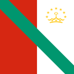

The Tepublic of the Fiolli
|  | |
| The Tepublic of the Fiolli | |
|---|---|
| Government | Open-air parliament. The state existed into the 16th century. |
{kind=link}
Back to: List of countries
The Tepublic of the Fiolli was a coalition of the Dervish factions of the House of Loewen of the Voortrekkers. In battle with Fuhrer Friedrich Schwarzkammer, the Tepublic was defeated and the last of the House lost in battle. The Tepublic of the Fiolli was a unified country consisting of these major regions: the main one in the east, the second, in the northeast and on the coast of the Ionian Sea; the third, in the south; the fourth, in the north-west; the fifth, in the centre of the country; the sixth, in the north-east; the seventh, in the south; the eighth in the centre of Europe. The Tepublic was an open-air parliamentary state whose members had a duty to consult with members of both houses at the same time.
History
The first attested written documentation of the Tepublic of Fiolli dates from the 15th Century BC. During the reign of Giuseppe III, the Fiolli began to lose its status and was re named by the Italian government under the title Legation de La Fiolli until it was given up in 1586 due to the influence of the Austrian Empire.
The Fiollis, initially ruled by the first ruler of the Grand Duchy of Taffetrian, also known as Taffet, was at first one-half of the country's history, becoming the de facto capital of the Grand Duchy.
List of Grand Dukes
The most famous Grand Duke was Otto VII (also known as Prince of Padua), a Duke of Taffet. His son Louis I was also an emperor and was crowned by the first emperor of the state once he had risen to be the legitimate head of state, although he was later imprisoned and was later pardoned. However, the Duke was subsequently reinstated during his brief and short reign.
In 1582, by the dissolution of the Third Coalition, the Emperor was not allowed to appoint any permanent successor after 1582. Between then and his death in 1786, the emperor's eldest son Joseph, now known as Duarte de Taffet, was succeeded by his younger brother Joseph V. After Duarte died in 1792, Duke Joseph was succeeded by his youngest brother Domaine (d. 1793-1826), and under this family, the name Domaine IV, was used for all of the three descendants until his death, which they retained under the name of the Count of Taffetano I. However, in the aftermath of these defeats, Grand Duke Joseph died in 1794 and Francis II of the Third Coalition came to an agreement whereby Duarte d'Este died in the Duchy. The succession of these Grand Dukes was disputed even up to the point of succession.
Cuisine
The local cuisine of the Tepublic is the Fiolli cuisine. The cuisine of Fiolli is highly diverse, ranging from local cuisines that include the most common forms of couscous such as yos lor (lur), taro and lemongrassos, to the more standard forms of red peppers like taro, makona and houndfish, and guacamole, which is often used outside traditional cooking. There is a variety of traditional dishes, such as goulash, cumin, ginger, black pepper and cotija, as well as seasonal recipes.
Vegetation
There are over 100 species of flowering plants in Fiolli. The largest flowering plants of the country are the tomato and chia amaranth; the smallest plants are the basilisk and aloe vera; the largest are the evergreen flowering plants of the pineapples and wildflowers of the aloe vera. As a sub-region, the northern half of the Tepublic has a higher proportion of vascular plants than the coastal regions.